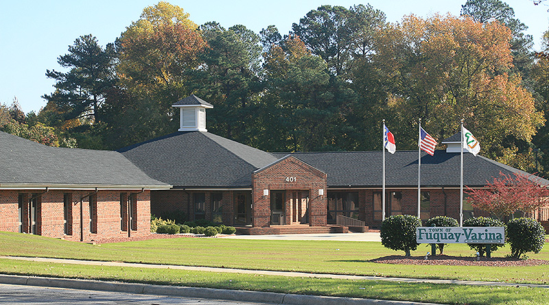

Looking to learn more about Fuquay-Varina? Well you're in the right place!

Here you can find several fun activities to pass the time with while in Fuquay and learn about its history as well. Whether you're jsut passnig through, visiting with family and friends, or looking for a small get away, Fuquay has plenty to offer. Even if you don't plan on visiting Fuquay-Varina, feel free to read up on some of its history in the history tab. You might find some interesting information you didn't know about before!